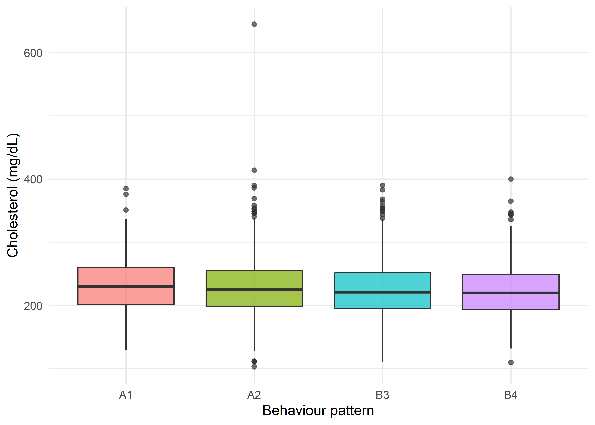
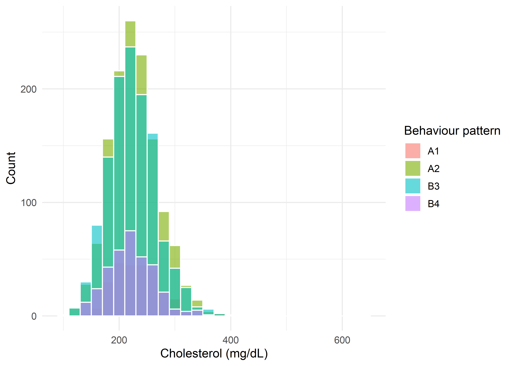

ggplot(wcgs[!is.na(wcgs$chol), ], aes(x = behpat, y = chol, fill = behpat)) +
geom_boxplot(alpha = 0.7, show.legend = FALSE) +
labs(x = "Behaviour pattern", y = "Cholesterol (mg/dL)") +
theme_minimal(base_size = 12)
By the end of this chapter, you should be able to:
In this chapter, we will use a variable named behpat measuring behavioral pattern (A1, A2, A3, A4) as explained in the codebook of WCGS (Aragon et al. 2020) with total cholesterol (chol, mg/dL) as the primary outcome.
ggplot(wcgs[!is.na(wcgs$chol), ], aes(x = behpat, y = chol, fill = behpat)) +
geom_boxplot(alpha = 0.7, show.legend = FALSE) +
labs(x = "Behaviour pattern", y = "Cholesterol (mg/dL)") +
theme_minimal(base_size = 12)Three procedures are commonly used to compare \(k \ge 3\) independent groups:
| Test | Assumes equal variances? | Assumes (approx.) normality? | Uses |
|---|---|---|---|
| One-way ANOVA (Fisher’s) | Yes | Yes, in each group | Raw values |
| Welch’s ANOVA | No | Yes, in each group | Raw values |
| Kruskal-Wallis test | No | No | Ranks of the pooled values |
Just as Welch’s \(t\)-test generalised Student’s \(t\)-test to unequal variances in the two-group case, Welch’s ANOVA generalises one-way ANOVA to unequal variances across \(k\ge3\) groups; and just as the Mann-Whitney U test generalises to a rank-based two-group comparison, the Kruskal-Wallis test generalises the Mann-Whitney idea to \(k\ge3\) groups by ranking all observations together.
\[ H_0: \mu_1=\mu_2=\cdots=\mu_k \qquad \] \[ H_1: \text{at least one } \mu_i \text{ differs from the others} \]
Note carefully what \(H_1\) does not say: it does not specify which group(s) differ, or how many. A significant omnibus \(F\)-test tells us only that some difference exists somewhere among the \(k\) groups; identifying which groups differ requires a separate post-hoc procedure (see below).
One-way ANOVA works by decomposing the total variability in the outcome into a part attributable to differences between group means, and a part attributable to variability within each group (individuals varying around their own group’s mean):
\[ SS_{Total} = SS_{Between} + SS_{Within} \tag{23.1}\]
with
\[ SS_{Total}=\sum_{i=1}^{k}\sum_{j=1}^{n_i}(x_{ij}-\bar x)^2, \qquad SS_{Between}=\sum_{i=1}^{k} n_i(\bar x_i-\bar x)^2, \qquad SS_{Within}=\sum_{i=1}^{k}\sum_{j=1}^{n_i}(x_{ij}-\bar x_i)^2 \tag{23.2}\]
where \(\bar x_i\) is the mean of group \(i\) (size \(n_i\)), \(\bar x\) is the grand mean across all \(N=\sum n_i\) observations, and \(x_{ij}\) is the \(j\)th observation in group \(i\). Intuitively: if the group means are very spread out relative to the spread of individuals within each group, \(SS_{Between}\) will be large relative to \(SS_{Within}\), and we will conclude the groups differ.
Each sum of squares is converted to a mean square by dividing by its degrees of freedom, and the ratio of the two mean squares forms the test statistic:
\[ df_{Between}=k-1, \qquad df_{Within}=N-k \]
\[ MS_{Between}=\frac{SS_{Between}}{k-1}, \qquad MS_{Within}=\frac{SS_{Within}}{N-k} \]
\[ F=\frac{MS_{Between}}{MS_{Within}} \qquad \sim\; F_{(k-1,\,N-k)} \text{ under } H_0 \tag{23.3}\]
These quantities are conventionally displayed in an ANOVA table:
| Source | SS | df | MS | F |
|---|---|---|---|---|
| Between groups | \(SS_{Between}\) | \(k-1\) | \(MS_{Between}\) | \(MS_{Between}/MS_{Within}\) |
| Within groups | \(SS_{Within}\) | \(N-k\) | \(MS_{Within}\) | |
| Total | \(SS_{Total}\) | \(N-1\) |
When \(k=2\), one-way ANOVA is mathematically identical to Student’s pooled-variance \(t\)-test from Chapter 3 (in fact \(F=t^2\)) — one-way ANOVA is simply the natural generalisation to \(k\ge3\) groups.
A significant omnibus \(F\) only establishes that at least one group mean differs from at least one other — it does not say which pair(s). It is tempting to just run a \(t\)-test on every pair of groups instead, but this is the single most common post-hoc error: with \(k\) groups there are \(\binom{k}{2}\) possible pairwise comparisons, and if each is tested at an uncorrected \(\alpha=0.05\), the probability that at least one comparison falsely rejects \(H_0\) — the family-wise error rate (FWER) — climbs well above \(5\%\). For \(k=4\) groups (as in this chapter’s full behaviour-pattern example) there are \(\binom{4}{2}=6\) comparisons, and even assuming independence, the FWER is approximately
\[ 1-(1-\alpha)^{m} = 1-(0.95)^{6} \approx 0.265 \]
There is roughly a 1-in-4 chance of at least one false positive, more than five times the nominal \(5\%\) (and the comparisons are typically correlated in practice, which changes the exact figure but not the basic problem). A post-hoc test is simply a pairwise-comparison procedure explicitly built to control this family-wise error rate at the nominal \(\alpha\), rather than controlling the error rate of each individual comparison in isolation.
Tukey’s HSD is the classical, and usually preferred, post-hoc procedure specifically for all pairwise comparisons among \(k\) group means following a one-way ANOVA. Instead of the ordinary \(t\)-distribution, it uses the studentised range distribution (\(q\)), which describes how far apart the largest and smallest of \(k\) sample means drawn from the same population would be expected to fall purely by chance — using this reference distribution (rather than \(k\) separate \(t\)-tests) is exactly what accounts for the number of comparisons being made simultaneously, giving Tukey’s HSD its family-wise error control.
For each pair of groups \(i,j\), the test statistic is
\[ q=\frac{|\bar x_i-\bar x_j|}{\sqrt{MS_{Within}/n}}\qquad \text{(equal group sizes } n\text{)} \tag{23.4}\]
compared against the critical value \(q_{(1-\alpha,\;k,\;N-k)}\) from the studentised range distribution (available in R via qtukey()). Equivalently, and more usefully for hand calculation, Tukey’s HSD gives a single critical difference — any pair of group means differing by more than this amount is declared significant:
\[ HSD = q_{(1-\alpha,\;k,\;N-k)}\sqrt{\frac{MS_{Within}}{n}} \tag{23.5}\]
When the groups have unequal sample sizes \(n_i \ne n_j\) (as in the full WCGS behaviour-pattern data), R (and most software) automatically applies the Tukey-Kramer adjustment, replacing \(MS_{Within}/n\) with \(\dfrac{MS_{Within}}{2}\left(\dfrac1{n_i}+\dfrac1{n_j}\right)\) for each specific pair — so the critical difference is slightly wider for comparisons involving a smaller group. Tukey’s HSD carries the same assumptions as the one-way ANOVA it follows: independent observations, approximate normality within each group, and importantly homogeneous variances across groups, since it relies on the single pooled \(MS_{Within}\) from the ANOVA table.
Tukey’s HSD is not the only option, and the right choice depends on exactly what is being compared and what can be assumed about the data:
| Method | Best suited to | Assumes equal variances? | Notes on power/conservativeness |
|---|---|---|---|
| Tukey’s HSD | All \(\binom{k}{2}\) pairwise comparisons | Yes | The standard choice for all-pairwise comparisons; more powerful than Bonferroni for this specific purpose because it uses a reference distribution built exactly for the “largest minus smallest of \(k\) means” problem, rather than a generic correction. |
| Fisher’s Least Significant Difference (LSD) | All pairwise comparisons, but only as a follow-up to a significant omnibus \(F\) | Yes | Uses an ordinary \(t\)-test critical value with no correction for multiple comparisons beyond the “protection” of requiring a significant \(F\) first — this protection is imperfect once \(k>3\), so Fisher’s LSD is now generally considered too liberal (inflated FWER) and is not recommended over Tukey’s HSD. |
| Bonferroni correction | Any small, pre-specified set of comparisons (not necessarily all pairs) | No (works with Welch/unequal variances too) | Simple and general — divide \(\alpha\) by the number of comparisons \(m\) (or multiply each \(p\)-value by \(m\)) — but conservative (low power) once \(m\) is more than a handful, since it does not exploit the specific structure of all-pairwise comparisons the way Tukey’s HSD does. |
| Scheffé’s method | Any number of comparisons, including complex contrasts (e.g., averages of several groups vs. another group), not just simple pairs | Yes | The most conservative common method — appropriate when you want the flexibility to test contrasts you didn’t specify in advance, but needlessly conservative for simple all-pairwise comparisons, where Tukey’s HSD dominates it in power. |
| Dunnett’s test | Comparing several treatment groups back to a single reference/control group only (not all pairs) | Yes | More powerful than Tukey’s HSD for this specific narrower question, because it only spends its error-rate “budget” on \(k-1\) comparisons against the control rather than all \(\binom{k}{2}\) pairs. |
| Games-Howell | All pairwise comparisons when variances are unequal (the natural follow-up to Welch’s ANOVA) | No | Uses per-pair variance estimates and Welch-Satterthwaite-adjusted degrees of freedom, analogous to how Welch’s \(t\)-test relaxes Student’s \(t\)-test — the appropriate substitute for Tukey’s HSD whenever Levene’s test flags heterogeneous variances. |
| Dunn’s test / Bonferroni-adjusted pairwise Wilcoxon | All pairwise comparisons following a significant Kruskal-Wallis test (non-normal data) | No | The nonparametric analogue of Tukey’s HSD — compares rank sums (Dunn’s test) or applies pairwise Mann-Whitney/Wilcoxon tests with a Bonferroni (or Holm, or Benjamini-Hochberg) correction, as used later in this chapter’s full R demonstration. |
Practical rule of thumb: for the very common case of comparing all pairs of \(k\) group means with roughly equal variances — the situation in most of this chapter — Tukey’s HSD is the right default because it is specifically calibrated for that exact comparison structure, giving it more statistical power than the more generic Bonferroni or Scheffé corrections while still rigorously controlling the family-wise error rate. Switch to Games-Howell if variances are unequal, to Dunnett’s test if the real question is “does each group differ from a single control,” and to Dunn’s test / Bonferroni-adjusted pairwise Wilcoxon tests if normality itself is in doubt and you are following up a Kruskal-Wallis test rather than an ANOVA (as demonstrated later in this chapter).
We draw a reproducible random subsample of \(n=5\) men from three of the four behaviour-pattern groups — A1, A2, and B4 (using three groups, rather than all four, keeps the by-hand arithmetic tractable while preserving the full logic of the method) — and compare total cholesterol (mg/dL).
| id | chol | group |
|---|---|---|
| 12036 | 264 | A1 |
| 2171 | 271 | A1 |
| 11310 | 198 | A1 |
| 13502 | 312 | A1 |
| 12191 | 265 | A1 |
| 3507 | 225 | A2 |
| 12128 | 268 | A2 |
| 3935 | 210 | A2 |
| 21101 | 250 | A2 |
| 10097 | 235 | A2 |
| 3105 | 162 | B4 |
| 12279 | 190 | B4 |
| 13152 | 211 | B4 |
| 2090 | 216 | B4 |
| 10138 | 177 | B4 |
#> Group n Mean
#> 1 A1 5 262.0
#> 2 A2 5 237.6
#> 3 B4 5 191.2#> [1] 230.2667\[ \bar x = \frac{264+271+198+312+265+225+268+210+250+235+162+190+211+216+177}{15}=230.27 \]
\[ SS_{Between}=5(262.0-230.27)^2+5(237.6-230.27)^2+5(191.2-230.27)^2 \]
#> [1] 12934.93For each group, sum the squared deviations of its own five observations from that group’s own mean, then add the three groups’ totals together:
SSw <- sum(tapply(sub$chol, sub$group, function(x) sum((x - mean(x))^2)))
SSw#> [1] 10758#> SS_Between SS_Within SS_Between + SS_Within SS_Total
#> 1 12934.93 10758 23692.93 23692.93\(SS_{Between}+SS_{Within}=SS_{Total}\) exactly (up to rounding), as required by Equation 23.1.
| Source | SS | df | MS | F | p_value |
|---|---|---|---|---|---|
| Between groups | 12934.93 | 2 | 6467.467 | 7.214 | 0.009 |
| Within groups | 10758.00 | 12 | 896.500 | NA | NA |
| Total | 23692.93 | 14 | NA | NA | NA |
#> Df Sum Sq Mean Sq F value Pr(>F)
#> group 2 12935 6467 7.214 0.00876 **
#> Residuals 12 10758 896
#> ---
#> Signif. codes: 0 '***' 0.001 '**' 0.01 '*' 0.05 '.' 0.1 ' ' 1The hand-calculated \(F=7.214\) on \((2,12)\) df, \(p=0.0088\), match summary(aov()) on the same subsample exactly. At the \(5\%\) level we reject \(H_0\) in this small subsample at least one of A1, A2, B4 has a different mean cholesterol. (Note this omnibus result alone does not tell us which group(s) differ. To see which gorups differs separately use the post-hoc test.
Just as with the two-group case, if the assumption of equal variances across the \(k\) groups is doubtful, either because Levene’s test rejects equal variances, Welch’s ANOVA should be used instead of the standard (Fisher) one-way ANOVA. It relaxes the equal-variance assumption by not pooling the within-group variances into a single \(MS_{Within}\); instead, each group’s variance is weighted separately (analogous to how Welch’s \(t\)-test does not pool \(s_1^2\) and \(s_2^2\)), and the degrees of freedom are adjusted downward via a Welch-Satterthwaite-type approximation, exactly as in the two-group case. In R this is available directly via:
oneway.test(outcome ~ group, data = your_data, var.equal = FALSE)As with Welch’s \(t\)-test, when the group variances genuinely are homogeneous, Welch’s ANOVA and the standard one-way ANOVA give nearly identical results, Welch’s ANOVA costs little in that case and protects against inflated Type I error when variances differ, so many statisticians recommend defaulting to it.
The Kruskal-Wallis test is the nonparametric, rank-based generalisation of the Mann-Whitney U test to \(k\ge3\) independent groups. It is use when normality is doubtful, samples are small, or the data contain influential outliers, exactly as with the two-group Mann-Whitney test in Chapter 3.
\[ H_0: \text{all } k \text{ populations have the same distribution (no location shift among any of them)} \]
\[ H=\frac{12}{N(N+1)}\sum_{i=1}^{k}\frac{R_i^2}{n_i}-3(N+1) \tag{26.1}\]
\[ H \;\sim\; \chi^2_{(k-1)} \text{ under } H_0 \]
We use the same 15-subject, 3-group (A1/A2/B4) subsample as above — conveniently, this subsample happens to contain no tied cholesterol values, simplifying the rank calculation.
| id | chol | group | rank |
|---|---|---|---|
| 3105 | 162 | B4 | 1 |
| 10138 | 177 | B4 | 2 |
| 12279 | 190 | B4 | 3 |
| 11310 | 198 | A1 | 4 |
| 3935 | 210 | A2 | 5 |
| 13152 | 211 | B4 | 6 |
| 2090 | 216 | B4 | 7 |
| 3507 | 225 | A2 | 8 |
| 10097 | 235 | A2 | 9 |
| 21101 | 250 | A2 | 10 |
| 12036 | 264 | A1 | 11 |
| 12191 | 265 | A1 | 12 |
| 12128 | 268 | A2 | 13 |
| 2171 | 271 | A1 | 14 |
| 13502 | 312 | A1 | 15 |
#> Group n Rank_sum
#> 1 A1 5 56
#> 2 A2 5 45
#> 3 B4 5 19\[ R_{A1}=56, \qquad R_{A2}=45, \qquad R_{B4}=19, \qquad R_{A1}+R_{A2}+R_{B4}=120=\frac{15\times16}{2}\;\checkmark \]
\[ H=\frac{12}{15\times16}\left(\frac{56^2}{5}+\frac{45^2}{5}+\frac{19^2}{5}\right)-3(16) \]
#> [1] 7.22#> H df p_value
#> 1 7.22 2 0.02705185#>
#> Kruskal-Wallis rank sum test
#>
#> data: chol by group
#> Kruskal-Wallis chi-squared = 7.22, df = 2, p-value = 0.02705The hand-calculated \(H=7.22\) on \(2\) df, \(p=0.0271\), match kruskal.test() exactly (no tie-correction adjustment was needed, since this subsample has no ties). As with the parametric ANOVA above, we reject \(H_0\) at the \(5\%\) level in this subsample but note the Kruskal-Wallis \(p\)-value (\(0.0271\)) is somewhat larger (less extreme) than the ANOVA’s (\(0.0088\)), a reminder that rank-based tests typically sacrifice some power relative to a correctly-specified parametric test, in exchange for robustness to non-normality.
ggplot(wcgs[!is.na(wcgs$chol), ], aes(x = behpat, y = chol, fill = behpat)) +
geom_boxplot(alpha = 0.7, show.legend = FALSE) +
labs(x = "Behaviour pattern", y = "Cholesterol (mg/dL)") +
theme_minimal(base_size = 12)
ggplot(wcgs[!is.na(wcgs$chol), ], aes(x = chol, fill = behpat)) +
geom_histogram(binwidth = 20, alpha = 0.6, position = "identity", colour = "white") +
labs(x = "Cholesterol (mg/dL)", y = "Count", fill = "Behaviour pattern") +
theme_minimal(base_size = 12)

tapply(wcgs$chol, wcgs$behpat, function(x) shapiro.test(x[!is.na(x)])$p.value)#> A1 A2 B3 B4
#> 6.067e-03 1.084e-17 4.161e-07 1.520e-04Cholesterol is right-skewed in every group, and with group sizes ranging from \(264\) to \(1{,}325\), Shapiro-Wilk rejects normality (all \(p<0.001\)) in every group — the usual large-\(n\) caveat applies (Shapiro-Wilk becomes hyper-sensitive to trivial deviations from normality once \(n\) is in the hundreds or thousands, so a formally “significant” result here does not necessarily rule out ANOVA, given the CLT and the moderate skew involved). Because of this, we will report all three procedures below and compare them.
leveneTest(chol ~ behpat, data = wcgs)#> Levene's Test for Homogeneity of Variance (center = median)
#> Df F value Pr(>F)
#> group 3 0.2 0.9
#> 3138Levene’s test is not significant (\(F=0.197\), \(p=0.899\)), the four groups’ cholesterol variances are statistically indistinguishable. This is a useful contrast with Chapter 3’s cholesterol-by-chd69 example, where variances differed enough that Welch’s test and the Mann-Whitney test were clearly preferred. Here, with variances confirmed homogeneous, we expect the standard one-way ANOVA and Welch’s ANOVA to agree closely — and, as shown next, they do.
fit <- aov(chol ~ behpat, data = wcgs)
summary(fit)#> Df Sum Sq Mean Sq F value Pr(>F)
#> behpat 3 24531 8177 4.35 0.0046 **
#> Residuals 3138 5897301 1879
#> ---
#> Signif. codes: 0 '***' 0.001 '**' 0.01 '*' 0.05 '.' 0.1 ' ' 1
#> 12 observations deleted due to missingnessoneway.test(chol ~ behpat, data = wcgs, var.equal = FALSE)#>
#> One-way analysis of means (not assuming equal variances)
#>
#> data: chol and behpat
#> F = 4.5, num df = 3, denom df = 835, p-value = 0.004kruskal.test(chol ~ behpat, data = wcgs)#>
#> Kruskal-Wallis rank sum test
#>
#> data: chol by behpat
#> Kruskal-Wallis chi-squared = 12, df = 3, p-value = 0.007Interpretation: All three procedures agree closely and reach the same conclusion. The standard one-way ANOVA gives \(F(3,3138)=4.351\), \(p=0.00458\); Welch’s ANOVA gives a nearly identical \(F=4.521\) (num df \(=3\), denom df \(=834.6\)), \(p=0.00374\) — exactly what we expect given the homogeneous variances confirmed by Levene’s test above, since Welch’s correction has little work to do when the equal-variance assumption already holds. The Kruskal-Wallis test corroborates this with \(\chi^2=12.01\), \(df=3\), \(p=0.00735\). We reject \(H_0\): mean (and typical) cholesterol is not the same across all four behaviour-pattern subtypes. As always, this omnibus result alone does not identify which subtype(s) differ — for that we turn to post-hoc comparisons.
TukeyHSD(fit)#> Tukey multiple comparisons of means
#> 95% family-wise confidence level
#>
#> Fit: aov(formula = chol ~ behpat, data = wcgs)
#>
#> $behpat
#> diff lwr upr p adj
#> A2-A1 -4.452 -11.976 3.0719 0.4250
#> B3-A1 -8.247 -15.828 -0.6662 0.0267
#> B4-A1 -10.109 -19.213 -1.0044 0.0226
#> B3-A2 -3.795 -8.229 0.6388 0.1234
#> B4-A2 -5.657 -12.371 1.0573 0.1331
#> B4-B3 -1.862 -8.640 4.9165 0.8948pairwise.wilcox.test(wcgs$chol, wcgs$behpat, p.adjust.method = "bonferroni")#>
#> Pairwise comparisons using Wilcoxon rank sum test with continuity correction
#>
#> data: wcgs$chol and wcgs$behpat
#>
#> A1 A2 B3
#> A2 0.70 - -
#> B3 0.04 0.29 -
#> B4 0.03 0.24 1.00
#>
#> P value adjustment method: bonferroniInterpretation: Tukey’s HSD identifies exactly two significant pairwise differences: A1 vs. B3 (mean difference \(-8.25\) mg/dL, \(p=0.027\)) and A1 vs. B4 (mean difference \(-10.11\) mg/dL, \(p=0.023\)). All other pairs (A2 vs. A1, B3 vs. A2, B4 vs. A2, B4 vs. B3) are not statistically significant. The Bonferroni-adjusted pairwise Wilcoxon tests show the same pattern: A1 vs. B3 (\(p=0.038\)) and A1 vs. B4 (\(p=0.025\)) are significant, while every other pair is not — a reassuring concordance between the parametric and nonparametric post-hoc approaches, giving confidence that the finding is not an artefact of the (mild) non-normality noted above.
Substantively, this tells a coherent story: A1 — the extreme or “purest” Type A subtype — has the highest mean cholesterol of the four groups, significantly higher than both B3 and B4 (the two Type B subtypes), but not significantly different from A2 (the moderate Type A subtype), and B3/B4 are not significantly different from each other or from A2. This is consistent with the broader WCGS finding (explored in Chapter 3 via the collapsed dibpat variable) that Type A behaviour pattern is associated with unfavourable cardiovascular risk-factor profiles, and further suggests the association is strongest at the most extreme end of the Type A spectrum.
vars_list <- c("chol", "sbp", "bmi")
results <- do.call(rbind, lapply(vars_list, function(v) {
f <- as.formula(paste(v, "~ behpat"))
d <- wcgs[!is.na(wcgs[[v]]), ]
a <- summary(aov(f, data = d))[[1]]
w <- oneway.test(f, data = d, var.equal = FALSE)
kw <- kruskal.test(f, data = d)
data.frame(Outcome = v,
ANOVA_F = round(a$`F value`[1], 3), ANOVA_df = paste0(a$Df[1], ",", a$Df[2]),
ANOVA_p = signif(a$`Pr(>F)`[1], 3),
Welch_F = round(unname(w$statistic), 3),
Welch_df = paste0(round(unname(w$parameter[1]), 1), ",", round(unname(w$parameter[2]), 1)),
Welch_p = signif(w$p.value, 3),
KW_chisq = round(unname(kw$statistic), 3), KW_p = signif(kw$p.value, 3))
}))
kable(results, caption = "One-way ANOVA, Welch's ANOVA, and Kruskal-Wallis results across three outcomes, by behpat")| Outcome | ANOVA_F | ANOVA_df | ANOVA_p | Welch_F | Welch_df | Welch_p | KW_chisq | KW_p |
|---|---|---|---|---|---|---|---|---|
| chol | 4.351 | 3,3138 | 0.0046 | 4.521 | 3,834.6 | 0.0037 | 12.010 | 0.0073 |
| sbp | 6.399 | 3,3150 | 0.0003 | 6.506 | 3,846.1 | 0.0002 | 16.447 | 0.0009 |
| bmi | 1.286 | 3,3150 | 0.2770 | 1.391 | 3,845.1 | 0.2440 | 3.648 | 0.3020 |
Cholesterol and systolic blood pressure (sbp) both show significant differences across behaviour-pattern subtypes by all three methods, while BMI (bmi) does not — a useful illustration that the behaviour-pattern association is not simply a proxy for body size, and that all three testing approaches tell a consistent story once variances are homogeneous.
| Normality? | Equal variances? | Recommended test |
|---|---|---|
| Yes | Yes | One-way (Fisher’s) ANOVA |
| Yes | No | Welch’s ANOVA |
| No (or small, skewed, or outlier-prone) | — | Kruskal-Wallis test |
As with the two-group case, many statisticians recommend defaulting to Welch’s ANOVA for 3+ group comparisons, since it costs little when variances are equal and protects against inflated Type I error when they are not.
behpat in the WCGS data, where Levene’s test confirmed homogeneity: \(F=0.197\), \(p=0.899\)).chd69 example, where unequal variances made the two approaches diverge more.Downloa